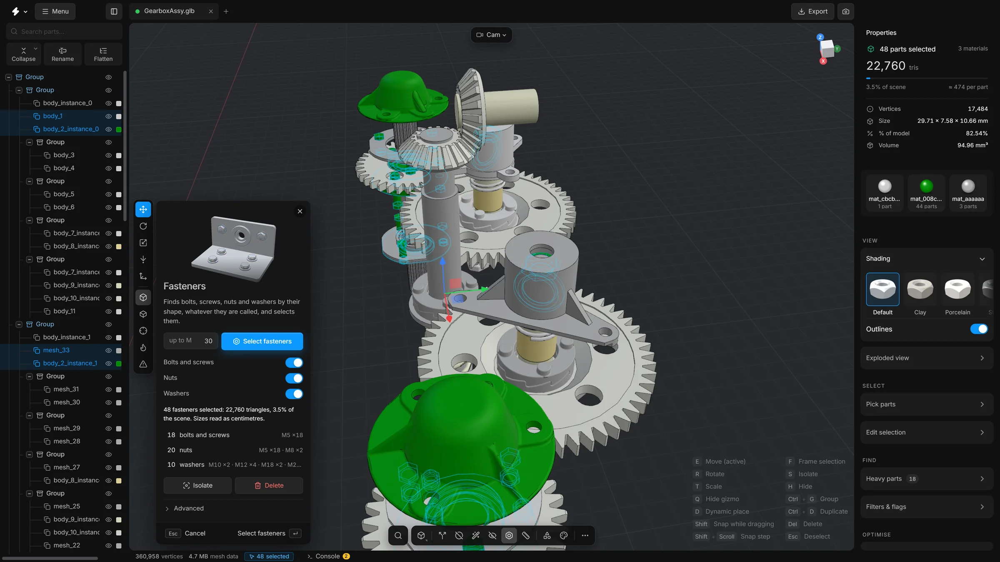

Fasteners
Find every bolt, screw, nut and washer by its shape, whatever the parts are called, then isolate or delete them in one step.
A machine can hold hundreds of fasteners: the small metal parts that hold other parts together. In a CAD export their names are often useless, for example =>0_1_1_9_000009, so searching by name does not work. Fasteners looks at the shape of every part instead, and selects the ones shaped like a bolt, a screw, a nut or a washer.
It cuts each part across its own axis and reads the outline: a round shank with a wider head, six flats around a hole, a flat ring. It compares that with the proportions of standard fasteners. Bushings, bearings, O-rings, shafts, pipe fittings and cable glands have other shapes, and are left alone.


When to use it
Before you delete or simplify the hardware, when the names do not help. Not when the fasteners are the point of the picture.
Steps
- Click the Fasteners button (a bolt) on the bottom toolbar. You can also find it in the
…list, or with the search (CtrlK, “Select fasteners”). Its panel opens at the bottom left of the viewport. - Set up to M to the largest thread to look for. It starts at 30. A thread size is written M and the width in millimetres: M6 is a bolt 6 mm wide. A bolt, nut or washer for a bigger thread is left alone.
- Leave the three switches on: Bolts and screws, Nuts and Washers. Switch off a kind you do not want.
- Press Select fasteners, or Enter. It looks at every visible part. On a large assembly it shows its progress and takes a few seconds.
- The fasteners are selected. A line says how many, how many triangles they hold and what share of the scene that is, for example “48 fasteners selected: 22,760 triangles, 3.5% of the scene”.
- Under it is a short list with one row per kind and the sizes found, for example “12 bolts and screws · M3.5 ×6 · M4 ×4 · M5 ×2”. Click a row to select only that kind. Click it again to go back to all of them.
- Press Isolate to look at them on their own. Check that nothing you need is among them.
- Press Delete to remove them, or leave them selected and use another tool on them, such as Smart fit.
What the options mean
Open Advanced in the panel.
- Look in: Whole scene / Selection
- Check every visible part, or only the parts you selected first.
- How sure: Certain
- Only parts with a clear fastener shape: a hex head, a key socket, a hex nut, a washer of standard proportions.
- How sure: Likely too
- The default. Also plain two-cylinder screws and headed pins, which have the proportions of a fastener and nothing else to show for it.
- Pins, studs and threaded rods
- Plain round bars up to the size limit. Off by default, because a shaft or a roller is a round bar too.
- Add to the selection
- Keeps what is selected now and adds the fasteners to it.
- Used at least … times
- Takes a fastener only if the scene holds at least this many of the same shape and size. Fasteners come in sets. 1 takes single ones too.
- Smallest thread
- Leaves the fasteners for threads below this alone. 0 means no lower limit.
- Reset to defaults
- Puts every option back.
Sizes and units
The app works in millimetres. A file saved in metres, centimetres or inches would show its fasteners at impossible sizes. The app checks which unit gives the sizes of real fasteners and reads the file that way. When it had to, the line under the button says so, for example “Sizes read as inches”.
Simplify instead of delete
To keep a stand-in where each fastener was, leave them selected and run Smart fit with Cylinder. Smart optimise does the same with its Simplify choice.
Undo
Selecting changes nothing. The delete is one undo step: CtrlZ.
Tips
- Show all parts first (AltH). Only visible parts are looked at.
- If a part that is not a fastener was selected, press Certain under How sure and run it again.
- If a fastener was missed, raise up to M, or switch on Pins, studs and threaded rods.